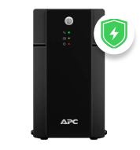

Nobreak APC
Back-UPS, 1500VA, Torre,
115V / 220V - BX2200BI-BR

Back-UPS, 1500VA, Torre,
115V / 220V - BX2200BI-BR
Seja para a sua casa ou o seu negócio, o APC Back-UPS 2200VA é o Nobreak perfeito para garantir o seu tempo de atividade.
Além de assegurar sua conexão, ele entrega proteção de energia e solução de backup que deixam seus equipamentos livres de danos e em pleno funcionamento. Com essa confiabilidade, mesmo quando a rede elétrica apresentar instabilidades, você não terá motivos para se preocupar.

Potência nominal em W: 1320 W
Potência nominal em VA: 2200 VA
O APC Back-UPS 2200VA pode ser conectado em rede elétrica 115V / 220V sem que você precise dedicar tempo fazendo configurações complexas. Leve essa praticidade para ter mais tranquilidade em todos os momentos da sua rotina, seja trabalhando ou desfrutando de entretenimento doméstico.
✔ Gerenciamento remoto
✔ Função de início automático
✔ Proteção contra surtos
✔ LEDs indicadores de status
✔ 7 tomadas NBR 14136
Pelo fato de possuir regulação automática de tensão, esse Nobreak corrige instantaneamente instabilidades decorrentes de quedas e sobretensão. Dessa forma, você pode continuar usando todos os seus dispositivos essenciais:
Entretenimento
Consoles Gamer
Computadores
Modens e Roteadores
Câmeras de Vídeo
Projetores
VoIP
Pontos de Venda